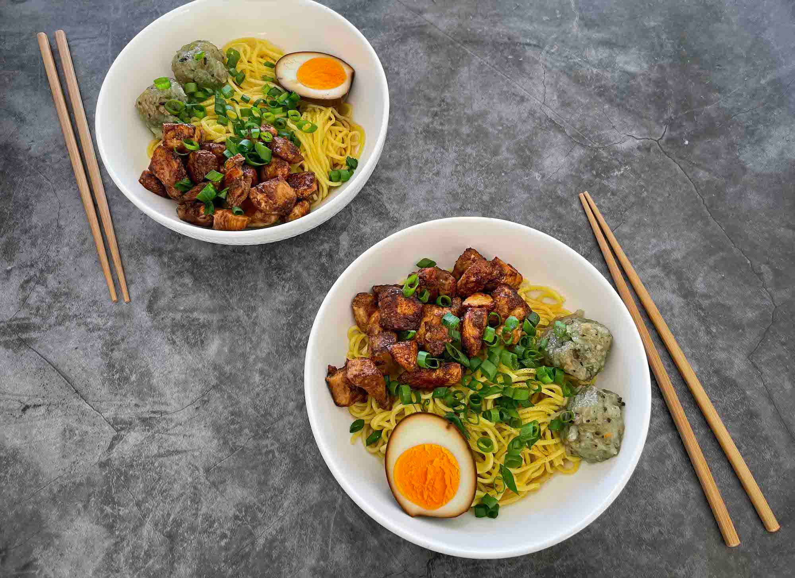

Mine Bouille

Ingredients
- 1 Chicken Breast cut into 1 cm cubes
- 1 tbsp Oyster sauce
- ½ tsp Crushed Ginger
- ½ tsp Dark Soy Sauce
- Salt
- Pepper
- Olive oil
- 375 g Fresh Egg Noodle
- Light Soy Sauce
- Sesame oil
- Fish sauce
- Spring Onions
- 3 Eggs optional
Steps
- In a medium bowl, marinate chicken breast with oyster sauce, ginger, dark soy, and salt and pepper to taste.
- In a large frypan, add oil over high heat, add marinated chicken breast and fry until lightly browned and cooked through (approximately 5 minutes). Set aside.
- Grab deep serving bowls and place ½ tsp light soy, ½ tsp sesame oil, and ½ tsp fish sauce into each. Set aside.
- Meanwhile, bring water to a boil in a medium saucepan. Season with salt and add 1 handful (serve) of egg noodle at a time. Boil for approximately 2 minutes or according to package directions. Use tongs or a sieve to transfer straight to the serving bowl over seasonings, repeat with remaining serves.
- Add 1-2 ladles of cooking water over noodles. Mix well and season with black pepper to taste. Top with chicken, dizef roti or fried egg, boulette chouchou, chilli paste (optional) and garnish with spring onion.
How to enjoy it ?
Pop up a bottle of soft drink or beer, sit under the shades of a tree at a beach and enjoy the warm breezes. Do not forget your bowl of boiled noodles